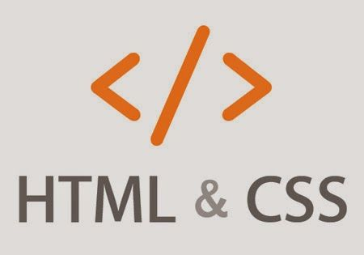

Hola, mi nombre es Ingrid Rosales, tengo 23 años de edad, en la actualidad curso el 8vo ciclo de la carrera Arquitectura de Interiores en la Escuela ‘’Toulouse Lautrec’’ en Lima – Perú.
LABORATORIO DE INNOVACIÓN
En esta bitácora aprenderás un plan de innovación vinculados a retos y necesidades de emprendimiento e intraemprendimiento empresarial a través de diferentes recursos tecnológicos.
Un proyecto de Innovación puede ser definido como un plan estratégico que permite crear nuevos productos o servicios que ofrecen una solución diferente a cualquier tipo de problema, ya sea porque se ha encontrado una solución más eficiente que las actuales o porque simplemente antes no existía una solución adecuada. Incluso un proyecto innovador puede no dar solución a un problema, sino tan solo ofrecer mejoras a la vida humana.
La Innovación es un proceso que tiene una intención de cambio, de transformación, de mejora de la realidad existente. En un proceso innovador, la actividad creativa entra en juego y su objetivo central es la calidad.
Una bitácora es, en la actualidad, un cuaderno o publicación que permite llevar un registro escrito de diversas acciones. Su organización es cronológica, lo que facilita la revisión de los contenidos anotados. Los científicos suelen desarrollar bitácoras durante sus investigaciones para explicar el proceso y compartir sus experiencias con otros especialistas.
Representa un cuaderno donde se reportan los avances y resultados de un determinado estudio o trabajo. Este incluye hipótesis, observaciones, ideas, datos u obstáculos que puedan surgir en el transcurso de la investigación. Suele utilizarse sobre todo para proyectos escolares, planificación de materias y contenido educativo.
Se encuentra organizado de forma cronológica, de tal modo que a medida que se van consiguiendo avances en el proyecto, los resultados se plasman en el cuaderno para poder tener un claro seguimiento de toda la labor realizada. En una bitácora de este tipo deberán registrarse todas las condiciones en las que se ha desarrollado el proyecto.
. CARACTERISTICAS
Blogs: Es un sitio web personal donde uno puede publicar cualquier cosa que desee compartir con otros. Se trata de un sitio Web, que se actualiza periódicamente y que recopila cronológicamente textos y artículos de uno o varios autores (el más reciente aparece primero).
Web: La web es el diminutivo de world wide web (o www), así como de las tecnologías útiles para su funcionamiento (HTML, URL, HTTP).
Redes Sociales: Las redes sociales, en el mundo virtual, son sitios y aplicaciones que operan en niveles diversos: el profesional, de relación, entre otros. Siempre permite el intercambio de información entre personas y/o empresas.
Contenido Audiovisual: Se define al contenido audiovisual como cualquier producción que contenga una sucesión de imágenes y/o audio susceptible de ser emitida y transmitida. Incluye todos los contenidos cinematográficos, televisivos, radiofónicos o multimedia. Es independiente de la naturaleza de su contenido y del medio a través del cual será transmitido.
2.- REPORTE DE AVANCE DE CLASE
El informe académico es un documento que recoge los resultados de una investigación sobre un determinado tema abordado en un curso. Este modelo de informe sirve para que los alumnos comuniquen sus conclusiones de manera formal a sus profesores, quienes serán los encargados de evaluar el estudio.
3.- DOCUMENTACIÓN: Es el procesamiento de información que otorgará datos específicos sobre un tema determinado. De acuerdo con ello puede identificarse como una técnica instrumental y auxiliar, para lograr informar a numerosas personas sobre un tema en específico.
Un documento no es más que un texto redactado que tiene la finalidad de servir de soporte para el relato de una circunstancia. También se puede describir como una carta que contiene datos que deben ser identificados para comprobar una información.
4. NOTAS DE CLASE: Las notas de clases constituyen un resumen de los temas desarrollados en clase. Se espera que sirvan de guía de estudio y que se complementen con los libros de texto
5. OBSTÁCULOS O DIFICULTADES
• Obstáculo: Todo aquello que dificulta el cumplimiento de un propósito o acción.
• Dificultad: La palabra dificultad proviene del término latino difficultas. El concepto hace referencia al problema, brete o aprieto que surge cuando una persona intenta lograr algo. Las dificultades, por lo tanto, son inconvenientes o barreras que hay que superar para conseguir un determinado objetivo

Dominio: El dominio es la dirección y nombre de tu sitio web. Por ejemplo:
www.office.com
www.apple.com
http://intranet.tls.edu.pe/
Recomendaciones para elegir un dominio:
• Elegir un nombre que sea fácil de escribir y recordar.
• Elegir una extensión formal: .com, .net, .org.
• También puedes elegir una extensión de país, en el caso de Perú es .pe • Si tienes un nombre común elige alternativas que te hagan diferente.
Hosting o Alojamiento: Es el espacio físico dónde se almacena tu sitio web. Puede ser una computadora o un servidor que se contrata en una empresa de alojamiento con distintos precios.
Recomendaciones:
• Elegir una compañía de alojamiento confiable después de hacer una comparación.
• Investigar aspectos importantes, como soporte 24/7, mantenimiento y copias de seguridad.
• Contar en la configuración con CPanel para la instalación de Wordpress.
Ejemplos:
• WebEmpresa
• Bluehost.
• HostGator.
• PuntoPe.
2.-Definiciones de HTML: HTML son las siglas de HyperText Markup Language o traducido de forma literal: Lenguaje de Marcas de HyperTexto, HTML5, como se puede deducir de su nombre, es la 5 revisión del estándar creado en 1991 por Tim Berners-Lee y que contenía originalmente 22 elementos. La versión definitiva de HTML5 se publicó en octubre de 2014.
3.-Estructura de HTML:
Definiciones de la cabecera
Instrucciones HTML
Cabecera: La cabecera de un documento está delimitada por las etiquetas y
Cuerpo: Es la parte delimitada por y
Etiquetas: HTML es un markup language, lo que significa que está escrito con códigos que puede leer una persona sin necesidad de compilarlo previamente. En otras palabras, el texto en una página web está marcado» con estos códigos para dar instrucciones al navegador web sobre cómo mostrar el texto. Estas etiquetas de marcado son las propias etiquetas HTML.
4.- DEFINICIONES
CSS (Cascading Style Sheets) es el código que da estilo al contenido web.
Al igual que HTML, CSS no es un lenguaje de programación. Tampoco es un lenguaje de marcas. CSS es un lenguaje de hojas de estilo CSS es lo que usas para diseñar elementos HTML de forma selectiva. Por ejemplo, este CSS selecciona texto de párrafo, configurando el color en rojo:
p {color: red; }
¿QUE ES GOOGLE SITE?
• Google Sites es una aplicación online de Google que permite la creación de sitios web de una manera rápida y sencilla.
• Este editor web permite mostrar distinta información desde un mismo lugar, por ejemplo, videos, diapositivas, calendarios, presentaciones, archivos adjuntos o texto.
• Al tratarse de una aplicación colaborativa permite compartir la información y decidir qué personas pueden verla o editarla, permitiendo el control absoluto de quién tiene acceso al sitio en todo momento.
2.- DISEÑAR PÁGINA DE INICIO
Es posible acceder al sitio utilizando cualquier navegador a través de las aplicaciones de Google. Como se observa en este caso, se despliega un menú con las aplicaciones disponibles. Debes seleccionarse la opción Drive.
• Ingresa la cuenta de correo electrónico y su contraseña.
• Google Acceder
• Luego se observa la ventana de Drive con los documentos en ella.
• Seleccionar el botón NUEVO.
• Elige la opción ‘’mas’’ y el nuevo menú seleccionar
La documentación de un sitio web previene errores y asegura el correcto uso de la plataforma en el futuro. A continuación, te mostraremos cuáles son los elementos de este entregable que generamos para los proyectos digitales.
• Estructura de archivos: Describe la organización de las carpetas que contienen los archivos del desarrollo front end y back end. Usualmente se clasifican según su extensión, por ejemplo .html, .css o .js.
• Atributos personalizados: Para programar funcionalidades especiales es posible usar atributos personalizados en HTML5, los cuales son reconocibles gracias al prefijo "data-". Esta sección incluye una descripción de estos atributos. Además, se entrega un detalle de las partes en que se ha implementado JavaScript, sus funciones en el sitio y cómo se conecta con el código HTML.
Comentarios recientes